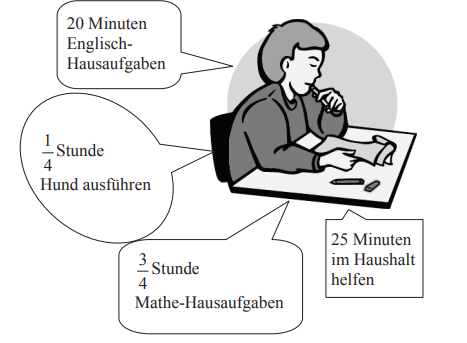

Andy sitzt am Schreibtisch und überlegt, was er noch alles zu tun hat.
Andy sitzt am Schreibtisch und überlegt, was er noch alles zu tun hat.

Berechne, wie viele Minuten Andy insgesamt für die Erledigung der beiden Hausaufgaben benötigt.
Gib die Gesamtzeit in Minuten an.
Es ist 15:10 Uhr.
Andy ist mit allen vier Tätigkeiten fertig.
Wann hat er begonnen, seine vier Tätigkeiten zu erledigen?
Berechne den genauen Zeitpunkt.
Gib die Uhrzeit im Format HH:MM an, z. B. 08:30.
Andy hört die Zeitansage im Radio.
Es ist 15:15 Uhr.
Um 16:30 Uhr möchte sich Andy
mit Tom treffen.
Gib an, wie viel Zeit er bis dahin noch hat.